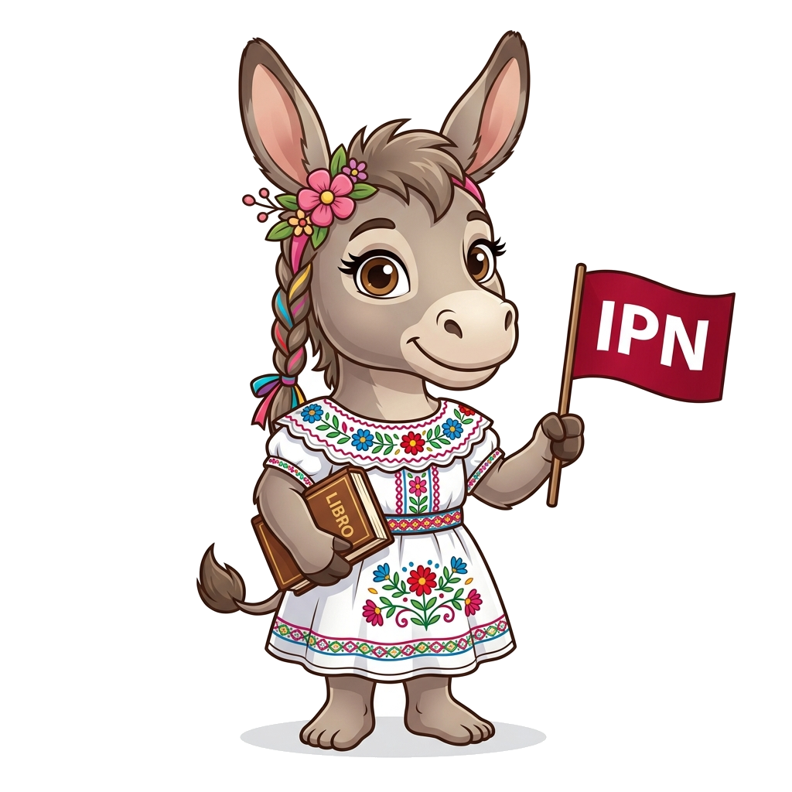
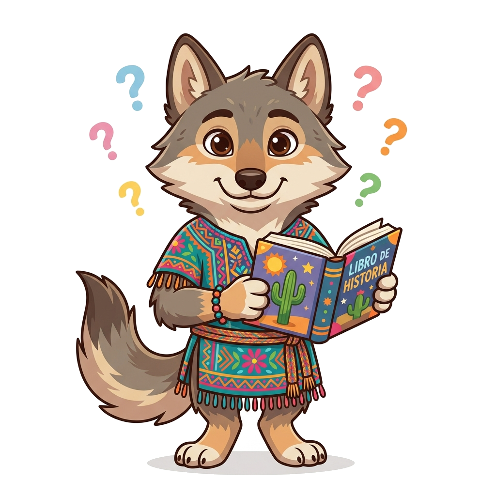
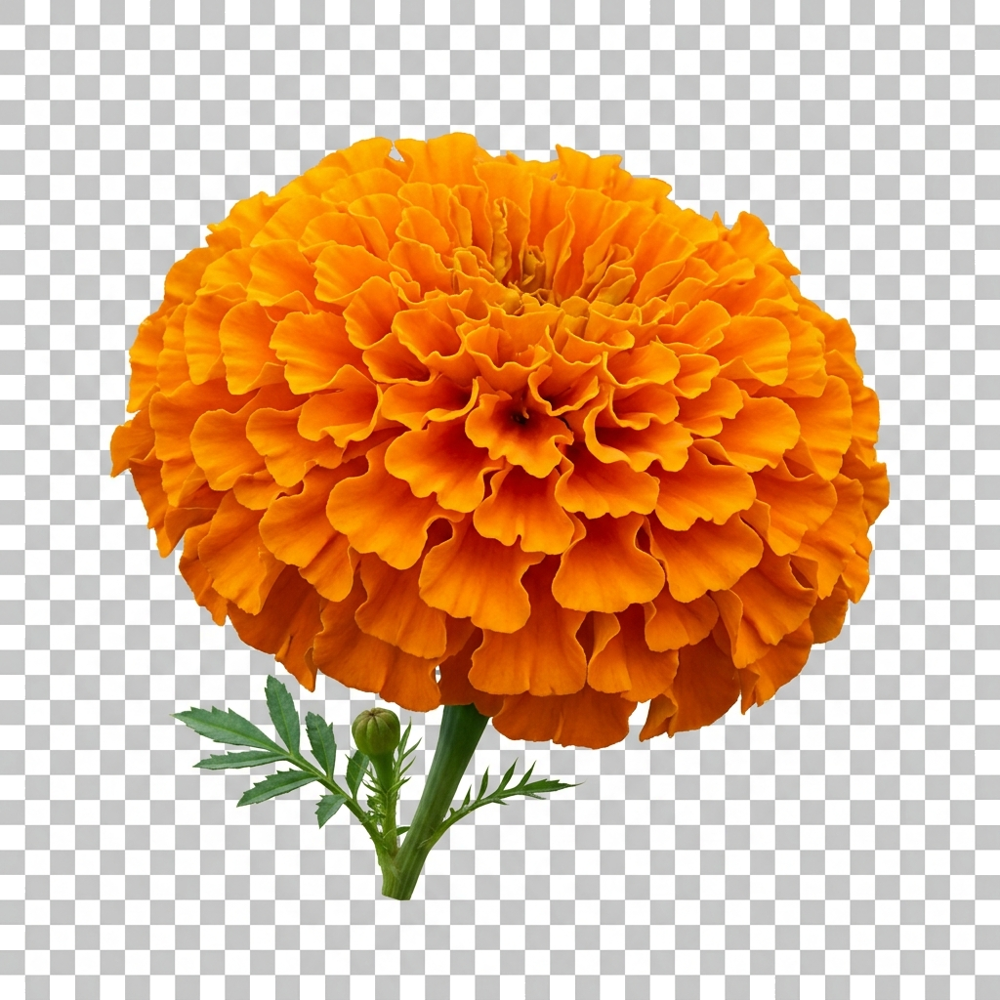
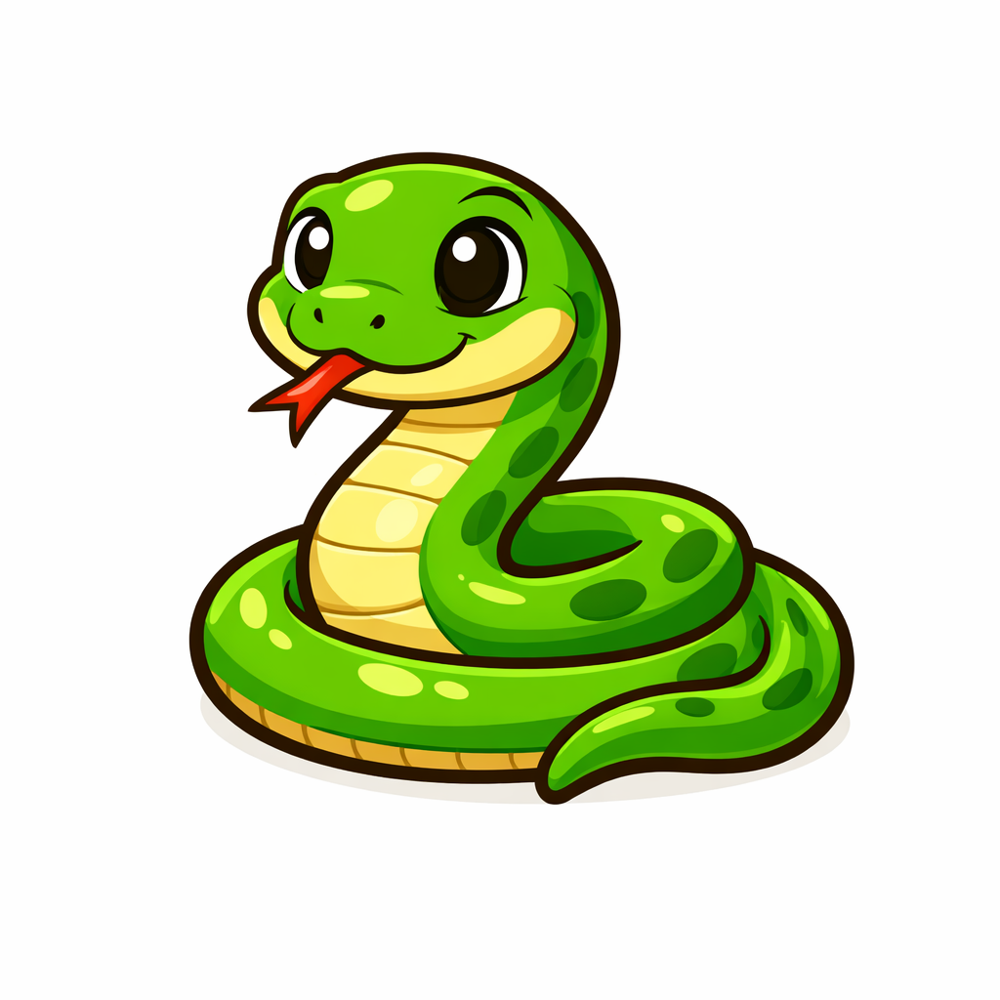

Aprende Náhuatl jugando
Descubre la riqueza de nuestra lengua originaria a través de una experiencia interactiva ilustrada y auditiva.


Elige tu versión de Poli-Tlazotla
Hemos diseñado dos ediciones de la aplicación para adaptarse a tus necesidades de aprendizaje.
Poli-Tlazotla Tradicional
Diseño TradicionalExplora el diccionario ilustrado completo, realiza búsquedas rápidas, reproduce audios nativos y juega interactivamente. Esta versión cuenta con la interfaz clásica y tradicional del proyecto.
- 📖 Diccionario ilustrado de términos
- 🔍 Buscador de palabras rápido
- 🔊 Audios de pronunciación nativa
- 🎨 Interfaz clásica y tradicional
Poli-Tlazotla Moderna
Diseño ModernoExplora el diccionario ilustrado completo, realiza búsquedas rápidas, reproduce audios nativos y juega interactivamente. Esta versión cuenta con la interfaz de diseño moderno y estilizado.
- 📖 Diccionario ilustrado de términos
- 🔍 Buscador de palabras rápido
- 🔊 Audios de pronunciación nativa
- 📱 Interfaz moderna y estilizada
¿Qué encontrarás en la aplicación?
Vocabulario Ilustrado
Cada palabra cuenta con su respectiva ilustración de alta calidad para facilitar el aprendizaje asociativo de los estudiantes.
Gamificación
Aprende de forma didáctica resolviendo evaluaciones interactivas y ganando puntos al seleccionar la imagen o audio correctos.
Identidad Guinda y Oro
Desarrollada bajo la supervisión académica del IPN para preservar las lenguas nacionales en ambientes virtuales modernos.
Palabras Clave Ilustradas
Un vistazo al diccionario gráfico e interactivo de la aplicación.

Xóchitl
Significado: Flor 🌸
Yólotl
Significado: Corazón ❤️
Calli
Significado: Casa 🏠

Cóatl
Significado: Serpiente 🐍